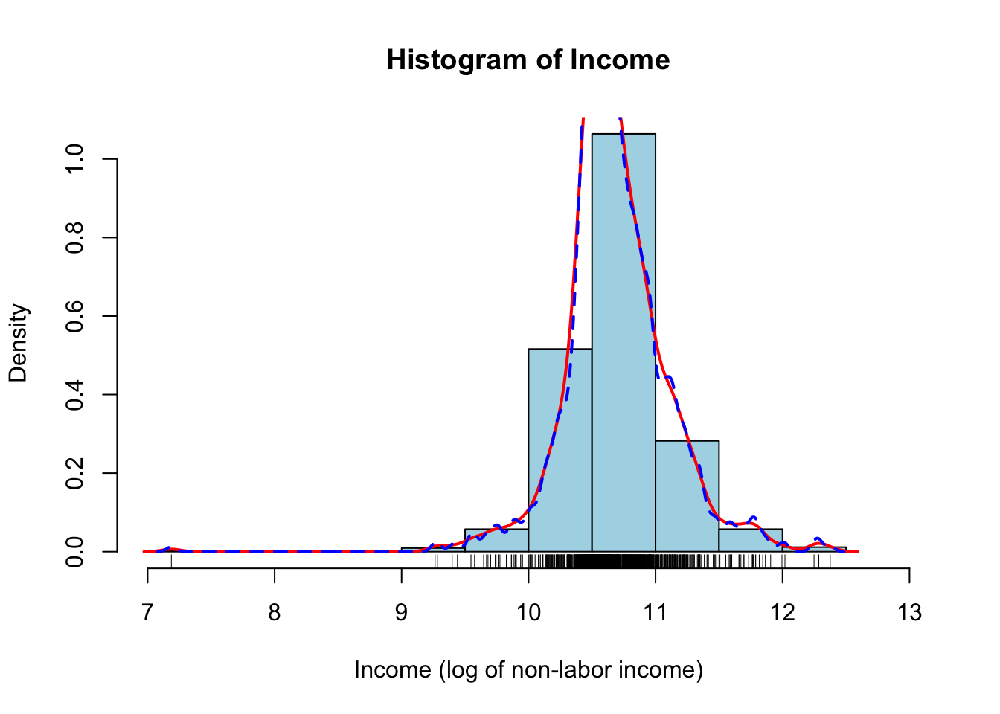
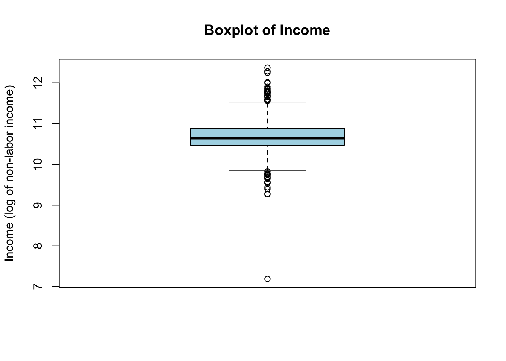
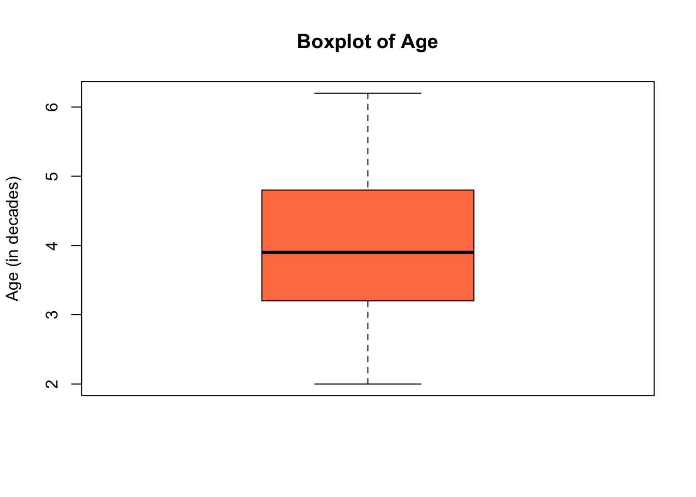
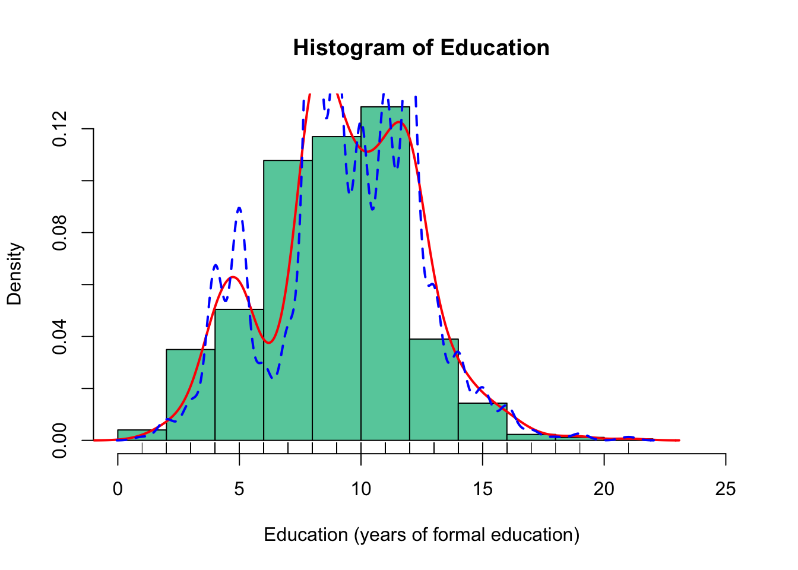
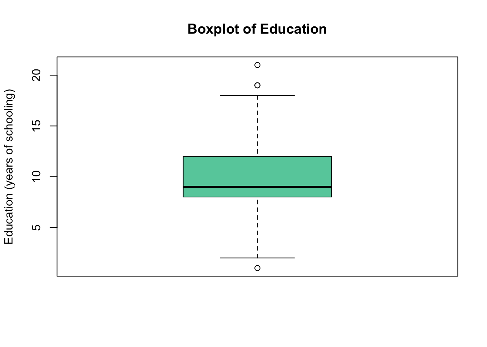
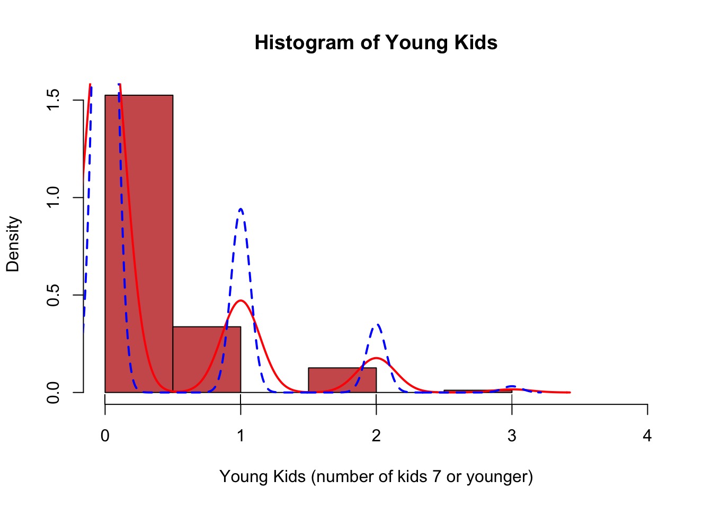
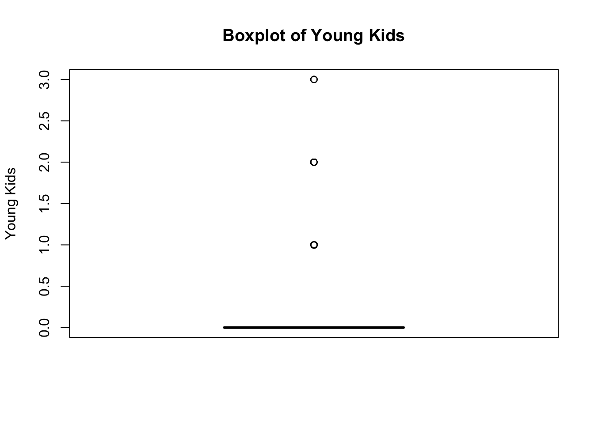
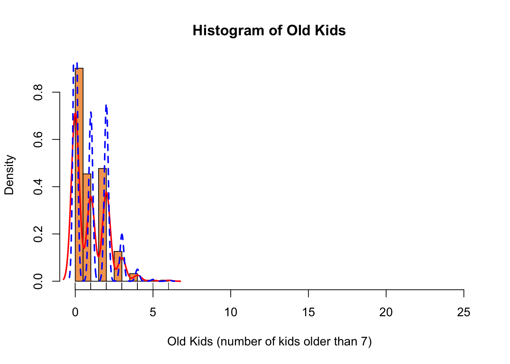
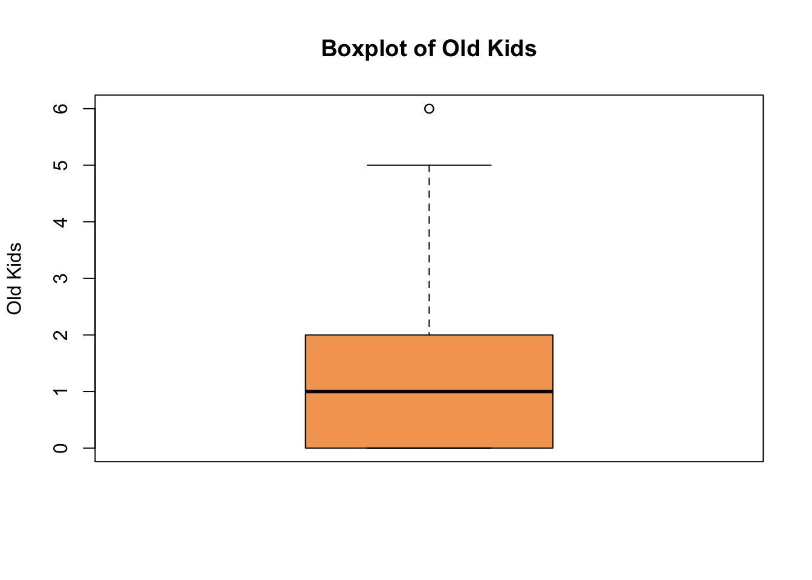

This project analyzed the factors influencing labor force participation in Switzerland using the 1981 Swiss Labor Market Dataset. I conducted descriptive analyses of key variables, fitted LPM, Probit, and Logit models, and selected the Logit model as preferred, using average marginal effects to quantify how income, age, education, family structure, and foreign status affect participation.
Author
Prisha Narasimhan
Published
October 15, 2025
a.
Briefly discuss the question you are trying to answer with your model.
We are using the Swiss Labor Market Participation Dataset from the 1981 Swiss Health Survey (SOMIPOPS) found in the Journal of Applied Economietrics Data Archive (Gerfin, 1996). The question we will be looking to answer is: “What factors influence whether an individual participates in the labor force in Switzerland?” Our (binary) dependent variable is participation, indicating whether an individual is active in the labor force (yes or no). The model includes six predictors: income (log of non-labor income), age (in decades), education (years of formal education), youngkids (number of children under 7), oldkids (number of children 7 or older), and foreign (whether the individual is a foreginer or Swiss). The model includes 2 categorical variables, participation (the dependent variable) and foreign, and 5 continuous variables (income, age, education, youngkids, and oldkids). The source of the data is: Gerfin, M. (1996). Parametric and Semi-Parametric Estimation of the Binary Response Model of Labour Market Participation, Journal of Applied Econometrics, 11, 321–339, available at http://qed.econ.queensu.ca/jae/1996-v11.3/gerfin/.
b.
Provide a descriptive analysis of your variables.
library(AER)
Loading required package: car
Loading required package: carData
Loading required package: lmtest
Loading required package: zoo
Attaching package: 'zoo'
The following objects are masked from 'package:base':
as.Date, as.Date.numeric
Loading required package: sandwich
Loading required package: survival
data("SwissLabor")SwissLabor <- SwissLabor
Participation Percentages
table(SwissLabor$participation)
no yes
471 401
prop.table(table(SwissLabor$participation)) *100
no yes
54.01376 45.98624
The binary dependent variable participation indicates whether an individual participates in the Swiss laber force in the SwissLabor dataset. From the summary table, we see that about 54.01% of individuals participate in the Swiss labor force. This shows that majority of the sample participate in the labor force.
nbr.val nbr.null nbr.na min max range
8.720000e+02 0.000000e+00 0.000000e+00 7.186901e+00 1.237565e+01 5.188749e+00
sum median mean SE.mean CI.mean.0.95 var
9.317815e+03 1.064313e+01 1.068557e+01 1.396863e-02 2.741611e-02 1.701470e-01
std.dev coef.var
4.124888e-01 3.860242e-02
summary(SwissLabor$income)
Min. 1st Qu. Median Mean 3rd Qu. Max.
7.187 10.472 10.643 10.686 10.887 12.376
Histogram of Income with Density Plot
hist(SwissLabor$income, col ="lightblue", breaks =10, xlab ="Income (log of non-labor income)", main ="Histogram of Income", prob =TRUE, xlim =c(7, 13))lines(density(SwissLabor$income), lwd =2, col ="red")lines(density(SwissLabor$income, adjust = .5), lwd =2, col ="blue", type ='l', lty =2)rug(SwissLabor$income)

The histogram of the Income (log of non-labor income) indicates that the distribution of the data is left skewed. Therefore we would be looking to use the median as opposed to the mean to measure the central tendency of the data. There is a large range of values, spanning from 7.187 to 12.376. The density plot illustrates a smooth, continuous estimate of the probability density function (PDF) of the data. The blue dotted line is a more precise depiction of the data estimates. It provides a clearer view of the distribution’s shape, allowing you to see peaks and valleys.
Boxplot of Income
boxplot(SwissLabor$income, ylab ="Income (log of non-labor income)", main ="Boxplot of Income", col ="lightblue")

From the boxplot of Income (log of non-labor income), we’re able to solidify a few key insights about the data that we learned through prior tools and figures. We’re able to see that the median of the data is between 10 and 11, which agrees with the true median of 10.643. We’re also able to see the rather small standard deviation of about 4.12e^-1. Both of the whiskers seem to be of similar size with outliers on either end. However, there is a potential outlier seeming to be at the minimum value, influencing the skew of the distribution. The appropriate values of Q1 and Q3 are also displayed, at 10.472 and 10.887, respectively. In addition, the box plot illustrates the min and max of the data, showing a difference of about 5 between the two.
Age Summary
library(pastecs)stat.desc(SwissLabor$age)
nbr.val nbr.null nbr.na min max range
8.720000e+02 0.000000e+00 0.000000e+00 2.000000e+00 6.200000e+00 4.200000e+00
sum median mean SE.mean CI.mean.0.95 var
3.484100e+03 3.900000e+00 3.995528e+00 3.573248e-02 7.013183e-02 1.113378e+00
std.dev coef.var
1.055167e+00 2.640871e-01
summary(SwissLabor$age)
Min. 1st Qu. Median Mean 3rd Qu. Max.
2.000 3.200 3.900 3.996 4.800 6.200
Histogram of Age with Density Plot
hist(SwissLabor$age, col ="coral", breaks =10, xlab ="Age (in decades)", main ="Histogram of Age", prob =TRUE, xlim =c(1,7))lines(density(SwissLabor$age), lwd =2, col ="red")lines(density(SwissLabor$age, adjust = .5), lwd =2, col ="blue", type ='l', lty =2)rug(SwissLabor$age)
The histogram of Age (in decades), has a somewhat central peak and overall looks to behave more normally. To measure the central tendency of the data, we may use either median or mean as there doesn’t seem to be heavy skews or deviations from normality. There is a large range of values, spanning from 2 to 6.2. The density plot illustrates a smooth, continuous estimate of the probability density function (PDF) of the data. The blue dotted line is a more precise depiction of the data estimates. It provides a clearer view of the distribution’s shape, allowing you to see smaller peaks and valleys.
Boxplot of Age
boxplot(SwissLabor$age, ylab ="Age (in decades)", main ="Boxplot of Age", col ="coral")

From the boxplot of Age (in decades), we are able to solidify a few key insights about the data that we learned through prior tools and figures. We are able to see that the median of the data is between 3 and 5, which agrees with the true median of 3.9. We are also able to see that the standard deviation of about 1.055. Additionally, both whiskers seem to be of similar size, which no indication of outliers. The appropriate values of Q1 and Q3 are also displayed, at 3.2 and 4.8, respectively. The box plot also illustrates the min and max of the data, showing that the difference is quite large (in decades) between the two.
Education Summary
stat.desc(SwissLabor$education)
nbr.val nbr.null nbr.na min max range
872.0000000 0.0000000 0.0000000 1.0000000 21.0000000 20.0000000
sum median mean SE.mean CI.mean.0.95 var
8116.0000000 9.0000000 9.3073394 0.1028207 0.2018053 9.2188669
std.dev coef.var
3.0362587 0.3262220
summary(SwissLabor$education)
Min. 1st Qu. Median Mean 3rd Qu. Max.
1.000 8.000 9.000 9.307 12.000 21.000
Histogram of Education with Density Plot
hist(SwissLabor$education, col ="mediumaquamarine", breaks =10, xlab ="Education (years of formal education)", main ="Histogram of Education", prob =TRUE, xlim =c(0, 25))lines(density(SwissLabor$education), lwd =2, col ="red")lines(density(SwissLabor$education, adjust = .5), lwd =2, col ="blue", type ='l', lty =2)rug(SwissLabor$education)

The histogram of Education (years of formal schooling), indicates that the distribution is slightly right-skewed. So, we would be looking to use the median as opposed to the mean to measure the central tendency of the data. There is a large range of values, spanning from 1 to 21. The density plot illustrates a smooth, continuous estimate of the probability density function (PDF) of the data. The blue dotted line is a more precise depiction of the data estimates. It provides a clearer view of the distribution’s shape, allowing you to see smaller peaks and valleys.
Boxplot of Education
boxplot(SwissLabor$education, ylab ="Education (years of schooling)", main ="Boxplot of Education", col ="mediumaquamarine")

From the boxplot of Education (years of schooling), we are able to solidify a few key insights about the data that we learned about through prior tools and figures. We’re able to see that the median of the data is between 8 and 12, which agrees with the true median of 9. We are also able to see the standard deviation of about 3.03. Additionally, both of the whiskers looks to be of similar size, with a few outliers above the median, suggesting the slight right-skew of the distribution. The appropriate values of Q1 and Q3 are also displayed, at 8 and 12. In addition, the box plot illustrates the min and max of the data, showing that the difference rather large between the two. There are a few outliers shown in the box plot on either side of the median (though moreso above the median), matching our previous findings as well.
Young kids Summary
stat.desc(SwissLabor$youngkids)
nbr.val nbr.null nbr.na min max range
872.00000000 665.00000000 0.00000000 0.00000000 3.00000000 3.00000000
sum median mean SE.mean CI.mean.0.95 var
272.00000000 0.00000000 0.31192661 0.02075440 0.04073447 0.37560960
std.dev coef.var
0.61286997 1.96478903
summary(SwissLabor$youngkids)
Min. 1st Qu. Median Mean 3rd Qu. Max.
0.0000 0.0000 0.0000 0.3119 0.0000 3.0000
Histogram of Young kids with Density Plot
hist(SwissLabor$youngkids, col ="indianred", breaks =10, xlab ="Young Kids (number of kids 7 or younger)", main ="Histogram of Young Kids", prob =TRUE, xlim =c(0, 4))lines(density(SwissLabor$youngkids), lwd =2, col ="red")lines(density(SwissLabor$youngkids, adjust = .5), lwd =2, col ="blue", type ='l', lty =2)rug(SwissLabor$youngkids)

The histogram of the Young Kids (number of kids individuals have that are 7 or younger), indicates that the distribution is extremely right-skewed. Therefore, we would be looking to use the median as opposed to the mean to measure the central tendency of the data. There is a shorter range of values, spanning from 0 to 3. The density plot illustrates a smooth, continuous estimate of the probability density function of the data. The blue dotted line is a more precise depiction of the data estimates. It provides a clearer view of the distribution’s shape, allowing you to see smaller peaks and valleys.
Boxplot of Young kids
boxplot(SwissLabor$youngkids, ylab ="Young Kids", main ="Boxplot of Young Kids", col ="indianred")

From the boxplot of youngkids (the number of kids an individual has that’s 7 or younger), we are able to solidify a few key insights about the data that we learned about through prior tools and figures. We are able to see that the median of the data is around 0, which agrees with the true median of 0. We are also able to see the standard deviation of about 0.612. Additionally, the comparatively large outliers above the median suggest the strong right-skew of the distribution. The values of Q1 and Q3 also seem to be around 0. Also, the box plot illustrates the min and max of the data, showing a difference of about 3 between the two. There are a few outliers shown in the box plot exceeding the standard deviation (all above the median), matching our previous findings as well.
Old Kids Summary
stat.desc(SwissLabor$oldkids)
nbr.val nbr.null nbr.na min max range
872.00000000 393.00000000 0.00000000 0.00000000 6.00000000 6.00000000
sum median mean SE.mean CI.mean.0.95 var
857.00000000 1.00000000 0.98279817 0.03680323 0.07223338 1.18110445
std.dev coef.var
1.08678629 1.10580822
summary(SwissLabor$oldkids)
Min. 1st Qu. Median Mean 3rd Qu. Max.
0.0000 0.0000 1.0000 0.9828 2.0000 6.0000
Histogram of Old Kids with Density Plot
hist(SwissLabor$oldkids, col ="sandybrown", breaks =10, xlab ="Old Kids (number of kids older than 7)", main ="Histogram of Old Kids", prob =TRUE, xlim =c(0, 25))lines(density(SwissLabor$oldkids), lwd =2, col ="red")lines(density(SwissLabor$oldkids, adjust = .5), lwd =2, col ="blue", type ='l', lty =2)rug(SwissLabor$oldkids)

The histogram of the Old Kids (number of kids individuals have that are older than 7), indicates that the distribution is extremely right-skewed. Therefore, we would be looking to use the median as opposed to the mean to measure the central tendency of the data. There is a shorter range of values, spanning from 0 to 6. The density plot illustrates a smooth estimate with many of peaks and valleys of the probability density function of the data. The blue dotted line is a more precise depiction of the data estimatse. It provides a clearer view of the distribution’s shape, allowing you to see the many peaks and valleys.
Boxplot of Old Kids
boxplot(SwissLabor$oldkids, ylab ="Old Kids", main ="Boxplot of Old Kids", col ="sandybrown")

From the boxplot of Old Kids (the number of kids an individual has that are older than 7), we are able to solidify a few key insights about the data that we learned about through prior tools and figures. We are able to see that the median of the data lies between 0 and 2, which agrees with the true median of 1. We are also able to see that the standard deviation of about 1.08. Additionally, the upper whisker is much longer, suggesting that the data has a right skew with more high values or outliers above the median. The appropriate values of Q1 and Q3 are also displayed, at 0 and 2. In addition, the box plot illustrates the min and max of the data, showing a difference of 6 between the two. There are a few outliers shown in the box plot exceeding the standard deviation (above the median), matching our previous findings as well.
Foreign Percentages
table(SwissLabor$foreign)
no yes
656 216
prop.table(table(SwissLabor$foreign)) *100
no yes
75.22936 24.77064
The binary varialbe foreign indicates whether an individual is a foreigner (“yes) or not (”no”) in the SwissLabor dataset. From the summary table, we see that about 75.23% of individuals are not foreigners, while 24.8% are foreigners. This shows that majority of the sample consists of non-foreigners, while about a quarter of the sample are foreigners.
Correlation Matrix
# excludes catagorical/binary variables participation and foreignnumeric_data <- SwissLabor[, c("income", "age", "education", "youngkids", "oldkids")]cor_matrix <-cor(numeric_data, use ="complete.obs")cor_matrix
income age education youngkids oldkids
income 1.00000000 0.00618126 0.32734578 -0.01733803 0.13910359
age 0.00618126 1.00000000 -0.14929401 -0.51909274 -0.11620515
education 0.32734578 -0.14929401 1.00000000 0.09834970 -0.03632097
youngkids -0.01733803 -0.51909274 0.09834970 1.00000000 -0.23842829
oldkids 0.13910359 -0.11620515 -0.03632097 -0.23842829 1.00000000
The correlation matrix displays the pairwise relationships betweeen several key continuous predictors in the dataset, including income (log of non-labor income), age (in decades), education (years of schooling), youngkids (number of kids less than 7), and oldkids (number of kids greater than 7). The participation and foreigner variable are not included due to their binary nature. A correlation close to 1 indicates a strong positive relationship, while a correlation close to -1 reflects a strong negative relationship. A correlation near 0 suggests no relationship. There appears to be a moderate positive correlation between education and income, indicating that individuals with higher education tend to have higher non-labor income. In contrast, there appears to be a moderately strong negative correlation between youngkids and age, indicating that younger individuals tend to have more young children. Additionally, there is a somewhat moderate negative correlation between youngkids and oldkids, suggesting that individuals with more children less than 7 tend to not have as many children greater than 7. Other correlations appear to be rather weak or negligible, suggesting low multicollinearity risks amongst predictors. Overall, the matrix helps identify which variables are more closely associated with one another, and informs further analysis and model building.
c.
Fit the three models below, and identify which model is your preferred one.
# LPM # convert participation into a binary variableSwissLabor$part_num <-ifelse(SwissLabor$participation =="yes", 1, 0)# fit LPM swiss.lpm <-lm(part_num ~ income + age + education + youngkids + oldkids + foreign, data = SwissLabor)# Probitswiss.probit <-glm(participation ~ income + age + education + youngkids + oldkids + foreign, data = SwissLabor, family =binomial(link ="probit"))# Logitswiss.logit <-glm(participation ~ income + age + education + youngkids + oldkids + foreign, data = SwissLabor, family =binomial(link ="logit"))
# Compare the Models - AIC TestsAIC(swiss.lpm)
[1] 1126.542
AIC(swiss.probit)
[1] 1066.983
AIC(swiss.logit)
[1] 1066.798
# probit and logit are preferred with very similar results according to AIC tests
# Compare the Models (probit and logit) - McFadden's R^2 (from scratch)# probit McFaddenswiss.null_p <-glm(participation ~1, data = SwissLabor, family =binomial(link ="probit"))logLik.full_p <-logLik(swiss.probit)logLik.null_p <-logLik(swiss.null_p)McFadden.R2_p <-1- (as.numeric(logLik.full_p) /as.numeric(logLik.null_p))McFadden.R2_p
[1] 0.1248651
# logit McFaddenswiss.null_l <-glm(participation ~1, data = SwissLabor, family =binomial(link ="logit"))logLik.full_l <-logLik(swiss.logit)logLik.null_l <-logLik(swiss.null_l)McFadden.R2_l <-1- (as.numeric(logLik.full_l) /as.numeric(logLik.null_l))McFadden.R2_l
[1] 0.1250191
# Confusion Matrix - Split Datalibrary(caret)
Loading required package: ggplot2
Loading required package: lattice
Attaching package: 'caret'
The following object is masked from 'package:survival':
cluster
Confusion Matrix and Statistics
Reference
Prediction 0 1
0 103 55
1 31 67
Accuracy : 0.6641
95% CI : (0.6026, 0.7217)
No Information Rate : 0.5234
P-Value [Acc > NIR] : 3.568e-06
Kappa : 0.3207
Mcnemar's Test P-Value : 0.01313
Sensitivity : 0.5492
Specificity : 0.7687
Pos Pred Value : 0.6837
Neg Pred Value : 0.6519
Prevalence : 0.4766
Detection Rate : 0.2617
Detection Prevalence : 0.3828
Balanced Accuracy : 0.6589
'Positive' Class : 1
# Probit - Confusion Matrixprobit_model <-glm(part_num ~ income + age + education + youngkids + oldkids + foreign_num, data = train, family =binomial(link ="probit"))pred_probit <-predict(probit_model, newdata = test, type ="response")class_probit <-ifelse(pred_probit >=0.5, 1, 0)confusionMatrix(as.factor(class_probit), as.factor(test$part_num), positive ="1")
Confusion Matrix and Statistics
Reference
Prediction 0 1
0 102 55
1 32 67
Accuracy : 0.6602
95% CI : (0.5986, 0.718)
No Information Rate : 0.5234
P-Value [Acc > NIR] : 6.478e-06
Kappa : 0.313
Mcnemar's Test P-Value : 0.01834
Sensitivity : 0.5492
Specificity : 0.7612
Pos Pred Value : 0.6768
Neg Pred Value : 0.6497
Prevalence : 0.4766
Detection Rate : 0.2617
Detection Prevalence : 0.3867
Balanced Accuracy : 0.6552
'Positive' Class : 1
# Logit - Confusion Matrixlogit_model <-glm(part_num ~ income + age + education + youngkids + oldkids + foreign_num, data = train, family =binomial(link ="logit"))pred_logit <-predict(logit_model, newdata = test, type ="response")class_logit <-ifelse(pred_logit >=0.5, 1, 0)confusionMatrix(as.factor(class_logit), as.factor(test$part_num), positive ="1")
Confusion Matrix and Statistics
Reference
Prediction 0 1
0 104 55
1 30 67
Accuracy : 0.668
95% CI : (0.6066, 0.7254)
No Information Rate : 0.5234
P-Value [Acc > NIR] : 1.932e-06
Kappa : 0.3283
Mcnemar's Test P-Value : 0.009237
Sensitivity : 0.5492
Specificity : 0.7761
Pos Pred Value : 0.6907
Neg Pred Value : 0.6541
Prevalence : 0.4766
Detection Rate : 0.2617
Detection Prevalence : 0.3789
Balanced Accuracy : 0.6626
'Positive' Class : 1
Based on the model selection criteria, the logit model is preferred. Both the probit and logit models yield similarly low AIC values, indicating comparable model fit, with the logit model showing a very slightly lower AIC. Additionally, the McFadden’s pseudo R² for the logit model is slightly higher than that of the probit model, reinforcing the choice of the logit model as the preferred specification. [If we include the confusion matrix: From the confusion matrix, accuracy of the linear probability model, the probit, and logit models, all yield very similar results, however the logit model is ever so slightly higher.] While the differences between the two models are rather minor, the logit model consistently performs slightly better on both metrics.
# average marginal effects library(margins)margins(swiss.logit)
Average marginal effects
glm(formula = participation ~ income + age + education + youngkids + oldkids + foreign, family = binomial(link = "logit"), data = SwissLabor)
income age education youngkids oldkids foreignyes
-0.1699 -0.1064 0.006616 -0.2775 -0.004584 0.2834
Interpretations of Average Marginal Effects: Income: There is an decrease in the probability of participating in the Swiss labor force, by about 17 percentage points, as the log of income-labor income increases. Age: There is a decrease in the probability of participation in the Swiss labor force by about 10.6 percentage points, as for each additional increase in decades. Education: there is a slight increase in the probability of participating in the Swiss labor force, by about 0.66 percentage points, for increases in years of education. Youngkids: There is a decrease in probability of participating in the Swiss labor force, by about 27.7 percentage points, for each additional young child. Oldkids: There is an extremely slight decrease, essentially negligiible, in the probability of participation in the Swiss labor force for each additional older child. Foreign: There is an increase in the probability of participating in the Swiss labor force, by about 28.3 percentage points, from people who aren’t foreigners to those who are.
Based on the logit model selected as the final model, we computed the Average Marginal Effects (AMEs). The results indicate that higher non-labor income, older age, and more young children significantly reduce the probability of labor force participation, while being a foreigner substantially increases it by approximately 28.3 percentage points. Education exerts a small positive effect, increasing participation likelihood marginally per additional year of schooling. The number of older children has little meaningful impact on participation. Overall, the logit model effectively indentifies the key socioeconomic and demographic factors that influence labor force participation in Switzerland, confirming our hypothesis that variables such as income, age, education, and family responsibilities may play crucial roles.